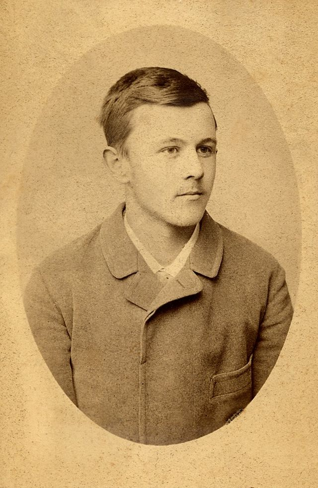

Detinjstvo i obrazovanje
Jovan Cvijić je rođen 12.oktobra (29. septembra po starom kalendaru) 1865. godine u Loznici. Otac mu se zvao Todor Cvijic poznat kao trgovac. Majka mu se zvala Marija, rođena Avramović, iz Korenite, sela u oblasti Jadar, što se nalazi blizu manastira Tronoše i Tršića rodnog sela Vuka Karadžića. Osnovnu školu je završio u Loznici, a nižu gimnaziju u Loznici i Šapcu. Višu gimnaziju je završio u Beogradu, u Prvoj beogradskoj gimnaziji.
Po završetku gimnazije, 1884. godine, hteo je da studira medicinu u inostranstvu, međutim loznička opština nije mogla da stipendira njegovo školovanje u inostranstvu. Tada mu je njegov profesor iz šabačke gimnazije Vladimir Karić, predložio da sluša studije geografije na Velikoj školi u Beogradu. Cvijić ga je poslušao i iste godine upisao Prirodno-matematički odsek Velike škole u Beogradu. Ove studije je završio 1888. godine. Jednu školsku godinu 1888/89. je radio kao predavač u Drugoj beogradskoj gimnaziji. Potom je 1889. upisao studije fizičke geografije i geologije na Bečkom univerzitetu kao državni pitomac. Studije u Beču je završio 1892. a već 1893. godine je doktorirao na istom univerzitetu sa tezom „Das Karstphänomen“.
Marta 1893. postao je redovni profesor Filozofskog fakulteta Velike škole u Beogradu. U prvo vreme predavao je fizičku geografiju i etnografiju, a zatim samo geografiju.
Naučni rad
Naukom se počeo baviti još kao student Velike škole i tada je nastao njegov rad „Prilog geografskoj terminologiji našoj“, a nastavio kao srednjoškolski profesor i bečki student proučavajući kraške pojave u istočnoj Srbiji, Istri i Jadranskom primorju i na osnovu toga objavio više radova i svoju disertaciju. Čitav život posvetio je proučavanju Srbije i Balkanskog poluostrva, putujući skoro svake godine po Balkanu.
Osim čisto geografskih proučavanja, bavio se i geologijom (geomorfologijom, tektonikom, paleogeografijom, neotektonikom). Njegova monografija o karstu izazvala je veoma povoljne ocene u evropskim naučnim krugovima, a pristupna akademska beseda o strukturi i podeli planina Balkanskog poluostrva na osnovu geološko-tektonske građe proslavila ga je kao prvog južnoslovenskog geotektoničara. I u geografskim delima Cvijić je uvek uključivao geologiju. Dvotomna „Geomorfologija“ ni danas nije izgubila aktuelnost i predstavlja izvanrednu polaznu osnovu u savremenim proučavanjima. Bavio se proučavanjem balkanskih psiholoških tipova.
Prilikom osnivanja Beogradskog univerziteta 1905. bio je među prvih osam redovnih profesora koji su zatim birali ceo ostali nastavni kadar, jer tada su svi profesori i saradnici ukinute Velike škole stavljeni na raspolaganje.
Osnovao je Geografski zavod Filozofskog fakulteta 1893. godine i bio njegov upravnik od osnivanja do 1927. godine. Zajedno sa grupom geografa i prirodnjaka osnovao je Srpsko geografsko društvo 1910. u Beogradu. Bio je predsednik ovog društva od osnivanja do svoje smrti. Bio je dva puta rektor Beogradskog univerziteta 1906/07 i 1919/20.
Postao je naučnik svetskog glasa i dobio je mnoga priznanja. Dopisni član Srpske kraljevske akademije postao je 5. februara 1896, a redovni član 4. februara 1899. Postavljen je ukazom za predsednika Srpske kraljevske akademije, 12. aprila 1921. Na ovom položaju bio je do svoje smrti 1927. godine. Osim toga bio je dopisni član Akademije nauka SSSR, Jugoslavenske akademije znanosti i umjetnosti, Učenog društva Parnasos (Atina), počasni doktor Sorbone i Češkog univerziteta (Prag). Bio je počasni član mnogih geografskih, etnografskih, prirodnjačkih i drugih društava širom sveta (Petrograd, Budimpešta, Bukurešt, ...). Bio je nosilac engleske, francuske i američke medalje za naučne radove.
Preko trideset godina je putovao kroz naše krajeve, što je rezultiralo brojnim radovima i utemeljenjem "antropogeografske škole". Ono što karakteriše njegov naučni rad, jeste uticaj klime i reljefa na građu (morfologiju čoveka, naglašavajući praktično među prvima da je čovek ekosenzibilno biće. Kad se radi o formiranju antropoloških tipova, Cvijić u primarne faktore ubraja socijalnu strukturu, odnosno zanimanje, endogamiju i egzogamiju, kao i migracije. Posebno je naglašeno delovanje geografske sredine na etnopsihološke karakteristike stanovništva. - Osnovnu koncepciju ovakvog stava je dao u radu Antropogeografski problemi Balkanskog poluostrva, što je prošireno u Balkanskom poluostrvu i južnoslovenskim zemljama (Cvijić, J.: Balkansko poluostrvo i južnoslovenske zemlje, II, Beograd 1931.) Ovaj rad je najpre objavljen na francuskom jeziku, a potom 1922. godine znatno proširen i štampan na srpskom jeziku.
Za trideset i nekoliko godina intenzivnog naučnog rada objavio je mnoga značajna dela. Jedno od najvažnijih dela je „Balkansko poluostrvo“.
Najvažnija dela su:
- Geografska ispitivanja u oblasti Kučaja u ist. Srbiji, 1893;
- Das Karstphänomen, 1893, Wien;
- Karst, 1895;
- Struktura i podela planina Balkanskog poluostrva, 1902;
- Die Tektonik der Balkanhalbinsel mit besonderer Berückichtigung der neueren Fortschritte in der Kenntnis der Geologie von Bulgarien, Serbien und Mazedonien, 1904, Wien;
- Osnove za geografiju i geologiju Makedonije i Stare Srbije I-III, 1906-1911;
- Grundlinien der Geographie und Geologie von Mazedonien und Alt-Serbien. Nebst Beobachtungen in Thrazien, Thessalien, Epirus und Nordalbanien, 1908, Gotha;
- Jezerska plastika Šumadije, 1909;
- Geomorfologija I-II, 1924, 1926.